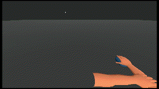

Rubber Hand Experiment

A simple project made for my Digital Media class. It involves virtually recreating the rubber hand experiment,
in which participants are shown a rubber hand that experiences the same sensory input as their own.
After a while the participants brain is tricked into believing that the rubber hand is their real hand.
Finally the experimenter attempts to scare the participant into pulling back their real hand by smashing the fake one with a hammer.
Here is an example of the experiment
I attempt to recreate this virtually by having the user follow the hands on screen, and then scare them with a bug
jumping on their hand. For further immersion, i ask the users to try and match the hands color, to their skin color in real life,
and even make the hand on screen follow their mouse.